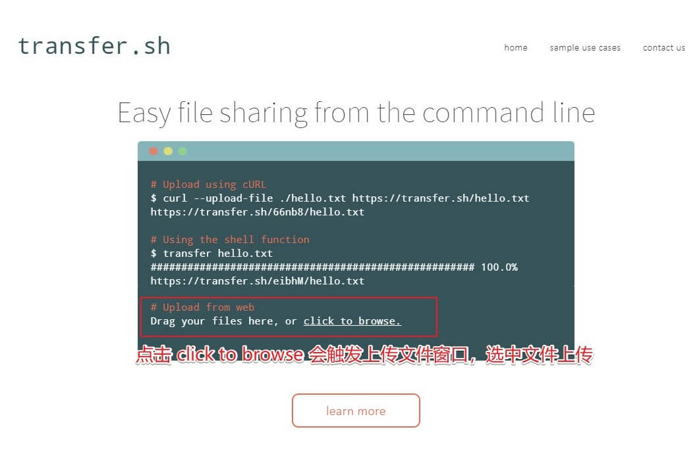
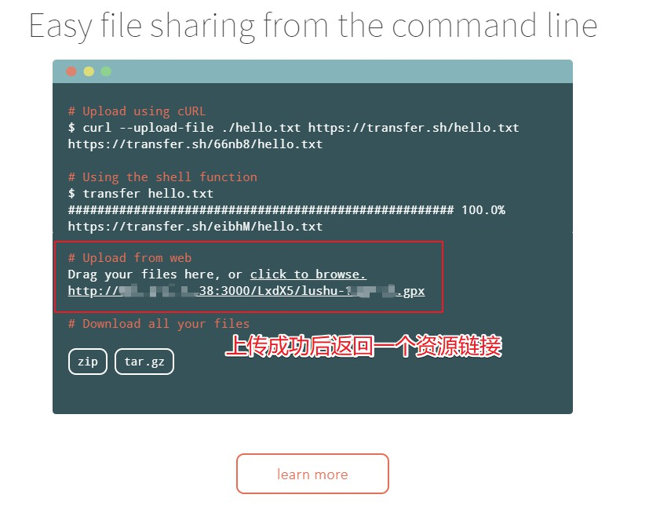
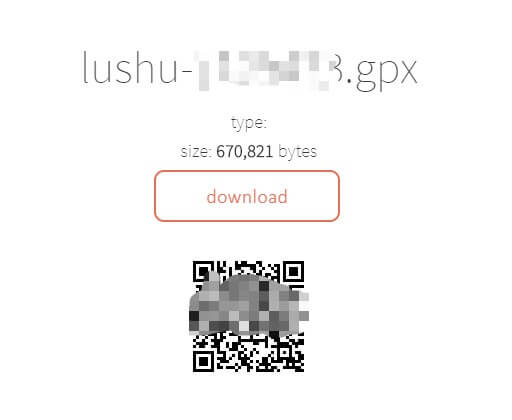

Linux - Transfer.sh 一键文件服务器

Contents
[NOTE] Updated January 21, 2020. This article may have outdated content or subject matter.
0x00 起源
平常需要各种传输日志文件，TiDB 部署进程比较多，打包后可能超过 100MB（微信最大支持 100MB 附件传输），发送人和接受人不是同平台时，文件切割什么的真不好用； 寻找到这么一个横跨多平台（伪）使用的文件服务器工具，支持浏览器、命令行方式上传下载数据文件。 transfer.sh 需要一个支持高速下载与上传的 Linux 服务器，否则效率大大降低；另外需要定期清理已上传数据内容（temp-path 参数），工具不自带 GC 功能
0x01 介绍
- Transfer.sh 项目官网
- Github Transfer.sh Repo 地址
从命令行轻松快速地共享文件。Transfer.sh 可直接启动一个文件共享服务器，使用 curl 命令发送数据 (HTTP 协议) 到 Transfer 服务器，通过 Transfer.sh 共享链接 (HTTP 协议) 下载数据。
Transfer.sh 支持 S3 协议的对象云存储 (Amazon S3)、谷歌网盘 (Google Drive)、系统本地存储 (local) 作为存储资源池。
0x02 安装
相关服务使用 Golang 编写
官方提供 docker images，通过docker pull dutchcoders/transfer.sh获取镜像，国内可使用docker pull registry.docker-cn.com/dutchcoders/transfer.sh获取镜像
-
安装 docker (centos 7.4)
yum install docker -y
-
启动 dcoker，并设置为开机启动
systemctl start dockersystemctl enable docker
-
获取镜像 (国内)
docker pull registry.docker-cn.com/dutchcoders/transfer.sh- 通过这个方式获取到的镜像名为
registry.docker-cn.com/dutchcoders/transfer.sh
-
查看镜像信息
docker images
-
启动
transfer.sh服务前准备- 需要使用 root 用户执行 docker run 命令
- 需要提前关闭 selinux，使用 getenforce 查看 selinux 状态；如果开启状态，使用
setenforce 0临时关闭 selinux - 在 centos 7 创建
/data/transfer_dir/数据目录，稍后映射到 docker 容器内
-
启动
transfer.sh服务- 命令中 -d 为后台运行，初次运行时建议去掉；启动成功后再次添加，如果第二次启动失败，可以执行
docker rm -f transfer docker run --publish 8000:8080 --name transfer -d -v /data/transfer_dir/:/tmp/ registry.docker-cn.com/dutchcoders/transfer.sh:latest --provider local --basedir /tmp/- docker 容器内默认监听 8080 端口，通过 8000 端口映射后对外提供服务
- 命令中 -d 为后台运行，初次运行时建议去掉；启动成功后再次添加，如果第二次启动失败，可以执行
-
启动成功后，使用
docker logs transfer可以看到以下日志信息1 2 3 4 5 6[root@Jeff-VM1 data]# docker logs 298d8dbd3cdf 2019/02/15 08:41:57 Transfer.sh server started. using temp folder: /tmp/ using storage provider: local 2019/02/15 08:41:57 listening on port: :8080 2019/02/15 08:41:57 ---------------------------
Transfer.sh 命令行参数
| Parameter | Description | Value | Env |
|---|---|---|---|
| listener | port to use for http (:80) | ||
| profile-listener | port to use for profiler (:6060) | ||
| force-https | redirect to https | false | |
| tls-listener | port to use for https (:443) | ||
| tls-listener-only | flag to enable tls listener only | ||
| tls-cert-file | path to tls certificate | ||
| tls-private-key | path to tls private key | ||
| http-auth-user | user for basic http auth on upload | ||
| http-auth-pass | pass for basic http auth on upload | ||
| temp-path | path to temp folder | system temp | |
| web-path | path to static web files (for development) | ||
| ga-key | google analytics key for the front end | ||
| uservoice-key | user voice key for the front end | ||
| provider | which storage provider to use | (s3, grdrive or local) | |
| aws-access-key | aws access key | AWS_ACCESS_KEY | |
| aws-secret-key | aws access key | AWS_SECRET_KEY | |
| bucket | aws bucket | BUCKET | |
| basedir | path storage for local/gdrive provider | ||
| gdrive-client-json-filepath | path to client json config for gdrive provider | ||
| gdrive-local-config-path | path to local transfer.sh config cache for gdrive provider | ||
| lets-encrypt-hosts | hosts to use for lets encrypt certificates (comma seperated) | ||
| log | path to log file |
SSL
如果要开启 SSL (默认使用 Let’s Encrypt 证书)，需要开启 force-https 并设置 tls-listener 参数，默认 tls-listener 端口 443，需要根据 Let’s Encrypt 给的信息设置 lets-encrypt-hosts 参数
如果使用自己的 SSL 证书，需要设置 tls-listener 参数，默认为 :443 ；开启 force-https 参数，设置 tls-cert=file 与 tls-private-key 参数
0x03 测试
命令行上传
该工具没有断点续传，请注意客户端与服务器端的网络质量
|
|
网页上传
如果是使用上面步骤的启动命令，可通过
http://IP:3000/打开网页，如下图



0x04 FAQ
- 调试时出现
2018/08/01 03:08:38 mkdir /tmp/u5fJW: permission denied，上传文件失败- centos 7 默认开启 selinux ，使用 -v 挂载映射存储时，docker 无法正确映射该存储
- 解决办法由两种，一种是关闭 selinux ，一种时启动时添加超级权限
--privileged=true，建议关闭 selinux
- 调试时出现 401 错误
- 因为添加了 http-auth-user / http-auth-pass 参数，在网页上传时，没有鉴权功能。
- 可使用 curl 命令携带鉴权信息
Linux alias
添加到用户 .bashrc or .zshrc 文件内
添加完成后需要使用 source .bashrc or .zshrc 重新加载环境变量
|
|